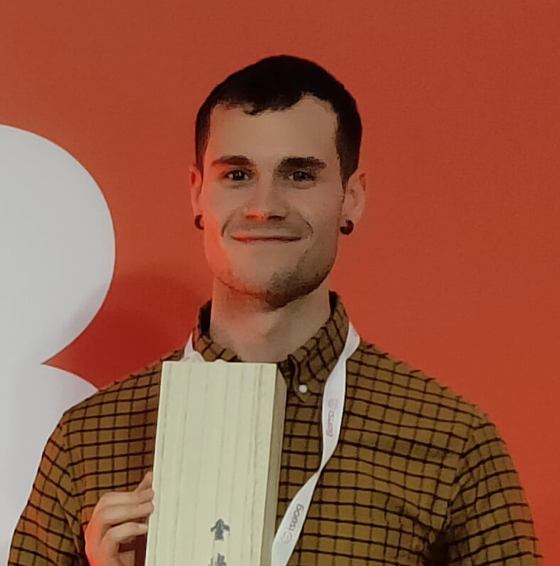

Hi, I'm Lasai.
I am a medical statistician. I develop, validate and improve prediction models to help clinical decision making.
I am a second-year PhD student at KU Leuven in the Development and Regeneration department and within the International Ovarian Tumour Analysis (IOTA) group supervised by Ben Van Calster, Laure Wynants and Dirk Timmerman. I work in methodological and applied work to improve the performance of clinical predictions models across different hospitals with focus on ADNEX model for ovarian cancer diagnosis.
If you want to collaborate with me drop me a message: lasai.barrenadataleb@kuleuven.be
